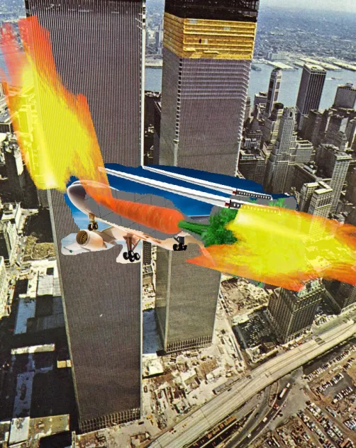

Learn Kanji in a Fortnight
The first deck
Kanji Radicals
It’s here: ankiweb
In case it goes down, it is hosted on this site too: mirror
Rep these really fast, 50/day. They just help to remember the next deck.

The next deck
Simple RTK deck (RRTK) Recognition Remembering The Kanji
It’s here: ankiweb
Or here: mirror
This is where we have a bit of fun. Rather than trying to rep cards “really hard” with anki’s algorithm, we accept that the purpose it merely to get the point where we kind of recognize these cards. Each day, setup a filtered deck for 300 fresh new cards cards. Review as many as you want. Rinse and repeat.

Of course, this will result in a very insane review count. So we set the option to show new cards first and show reviews randomly, and do as many reviews as desired. There will be more cards left, but that’s not worth worrying about. There is no need to learn this stuff “really well”, it’s just a goofy system to make reading a bit easier.
How to rep the cards:
The first time you see a kanji:
- If you know it from Japanese content, DELETE it (or suspend it). Eg. if you know a reading for it.
- If you don’t know it, and you make a story for it on the spot, pass it.
- If you can’t come up with a story, fail it and see if you get lucky and remember it next time without any story.
Reviewing old Kanji
- If you remember the keyword, any reading, or half of the story, go ahead and pass it.
- If the kanji evokes no such memory, fail it. Consider rewriting the story.
As usual, don’t use the hard/easy buttons, just again/good. Don’t learn to write the characters, just recognize them. Learn to write when you know Japanese.
Writing stories
Go for something short rather than long and memorable. A decent story might be this:
“A source is a wet meadow”
A bad story is anything that is too long or invokes too many unrelated words and ideas.
Another option is to use an image editor and an image search to put together low-quality memorable images. Don’t spend more than 60 seconds making a story for a card, because time is an asset and there are 3,000 cards to review. Only do this if very comfortable quickly making these kinds of cards with Gimp, for example. Text stories also work. Sometimes when you see a card, it will bring to mind a very particular kind of image. When I saw the kanji marked “smash”, I couldn’t help but think about the Russian slapping competitions so I put an image of that on there. It’s silly, but it works and only takes about thirty seconds. And it fit with the story that I made for it, which is important.


